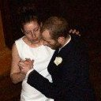

Workshops by invitation
Workshops by invitationWorkshops Tango de Salon, Milonga Lisa and Vals by Catherine Daniela Dogaer and Wim Taghon.

"Learning not by imitation but by insight"
Our teaching is based on a thorough grounding in technique and on an understanding of the structure and logic of the Tango. Dancers improve their improvisation skills by gaining deeper insights into how different moves can be combined &mdash and thus how they can create their own moves.
Central to our teaching methodology is the understanding of movement and balance taken from modern dance, applied to the authentic style of the old Tango maestros. We use concepts such as "pivot points" and centre of gravity shifts as well as advanced leading and following techniques to make complex moves easy.
Our 10+ years teaching experience allows us to quickly identify individual issues in mastering a move and to give personalised advice to each dancer. In this way dancers learn by not by imitating moves but by gaining insights.
| Dean & Karolina: "We keep telling everyone you guys should teach others how to teach as you are so good at what you do :). With your attitude and enthusiasm I feel sorry for everyone who isn't enrolled in your classes haha they miss out on life's great pleasure." (Dec 2012) Via email | |
 | Lesley & Craig: "Catherine and Wim are fabulous instructors. They explain the moves really well, encourage you and also allow you to express your own style when you become more confident. I highly recommend this tango class :)" (Jan 2013, dancing with Tango Tipica since 2010) On Facebook |
| Tunde & Lindsey: "I have been to lots of dancing classes over the years and tried Tango a couple of times before. Catherine and Wim are fantastic teachers and make a dance I previously found very difficult far easier. A great way to spend a Friday early evening." On Facebook | |
|  | Tom & Emilie: "Their class is very enjoyable, while they are approachable and friendly. Very fast learning, with almost immediate 'results' too." (Sept 2013) On Facebook |
Tango Tipica: Argentinian Tango in Glasgow  Last verified: 11 January 2014
Last verified: 11 January 2014

 Workshops
Workshops